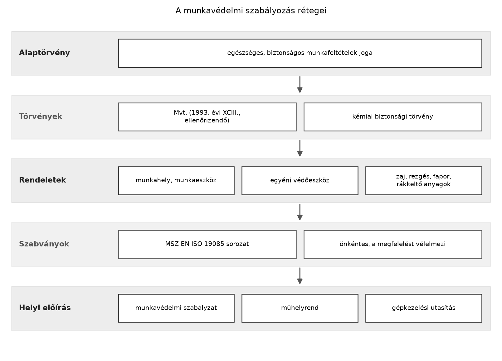

Első napod van a tanműhelyben. Az oktató körbevezet. Megmutatja: itt asztalos körfűrészgép, ott egyengető gyalugép, a polcokon lakkok, hígítók, pácok. Azt mondja: mielőtt bármihez nyúlnál, beszéljünk a munkavédelemről. Leveszi az órádat, a gyűrűdet, félrehúzza a bő kabátujjadat. Csak ezután enged a gép közelébe. Mire jó ez a szigorúság? Miért nem lehet azonnal „dolgozni”? A faipari műhely tele van olyan veszélyekkel, amelyek megváltoztathatják az életedet: forgó szerszámok, por, vegyi anyagok, nehéz táblák, elektromos áram. A munkavédelem az a tudás és szabályrendszer, amely segít, hogy estére ugyanúgy hazaérj, ahogy reggel bejöttél. Ez a fejezet megmutatja, honnan jönnek ezek a szabályok, ki mit tehet és ki mit köteles megtenni, hogy a munkahely érték maradjon: egészséged és biztonságod.
Képzelj el egy műhelyasztalt. Rajta egy fenyő keret alkatrészei, egy marógép, szorítók, ragasztóstubus, csiszolópapír. A falon piktogramok: védőszemüveg, fülvédő, porálarc. A levegő fűrészpor-szagú, a gépek motorja halkan zúg. A te szemedben ez még izgalmas. De ugyanezt a képet nézve a munkavédelmi szakember mást lát: a levegőben lévő fapor hosszú távon tüdőkárosító lehet; a marógép forgó szerszáma ujjat csonkolhat; a ragasztó oldószere szédülést okozhat; a rendetlen padlón el lehet csúszni. A munkavédelem arra tanít meg, hogy ugyanazt a műhelyt „biztonsági szemmel” is lásd. A szabályok nem az élet bonyolítására, hanem az élet megtartására valók.
Definíció. A munkavédelem a szervezett munkavégzésre vonatkozó biztonsági és egészségügyi követelmények, valamint az ezek érvényesítésére szolgáló intézmények és eljárások összessége. Röviden: mindaz, ami a munkavégzés során az ember épségét, egészségét és biztonságát védi, illetve a munkakörülmények javítását szolgálja.
A munkavédelem két ágból áll:
Definíció. Veszély: olyan forrás, helyzet, anyag, eszköz vagy tevékenység, amely ártalmat – sérülést, egészségkárosodást, anyagi kárt – okozhat. A faipari műhelyben ilyen például a forgó körfűrészlap, a zaj, a fapor, a tűzveszélyes lakk, a nehéz tábla leesése.
Definíció. Kockázat: annak a mértéke, hogy a veszélyből ténylegesen kár következik be. Két összetevője van: a károkozás valószínűsége és a lehetséges kár súlyossága. A kockázatot csökkenteni lehet a valószínűség csökkentésével (pl. védőburkolat, záró retesz) vagy a súlyosság mérséklésével (pl. védőszemüveg, elsősegélynyújtás).
Példa: ugyanaz a körfűrészlap veszély. Ha a védőburkolat fenn van, a kockázat alacsony; ha eltávolítják, a kockázat nagyon magas, mert a sérülés valószínűsége és súlyossága is megnő.
Definíció. Munkabaleset: az a baleset, amely a szervezett munkavégzés során vagy azzal összefüggésben éri a munkavállalót, és abból testi sérülés, egészségkárosodás vagy halál következik. A munkába menet vagy onnan hazafelé történt (úti) baleset a munkavédelmi törvény szerint főszabályként nem munkabaleset, kivéve, ha például a munkáltató saját vagy bérelt járművével történt; a társadalombiztosítás szerint viszont üzemi balesetnek minősülhet (ellenőrizendő: Mvt. fogalommeghatározás és az egészségbiztosítási törvény).
Definíció. Foglalkozási megbetegedés: olyan egészségkárosodás (betegség), amely a munkavégzésből, a munkakörülményekből, a foglalkozás gyakorlása közbeni ártalmakból keletkezik, és jogszabályban meghatározott jegyzékben szerepel. Faiparban tipikus lehet például a keményfa-por okozta orr- és orrmelléküreg-daganat (adenokarcinóma), a faporhoz köthető allergiás bőr- és légúti megbetegedés, a zaj okozta halláskárosodás, a rezgés okozta ér- és idegkárosodás (ellenőrizendő: hatályos jegyzék).
Definíció. Munkavállaló (a munkavédelmi törvény szempontjából): az, aki a munkáltatóval munkaviszonyban, tanulói jogviszonyban, szakképzési munkaszerződéses jogviszonyban áll, vagy más foglalkoztatásra irányuló jogviszonyban dolgozik. A tanuló tehát ugyanúgy jogosult a védelemre, mint a dolgozó, de rá szigorúbb felügyeleti és képzési szabályok vonatkoznak.
A munkahelyen ható tényezőket két nagy csoportra osztjuk:
Ezeket együttesen munkakörnyezeti hatásoknak vagy kockázati tényezőknek nevezzük. A faipari asztalos munkában a leggyakoribbak:
Ezekkel részletesen a Munkahelyek kialakítása, közlekedési utak, jelzések és műhelyrend, a Munkakörnyezeti hatások és kockázatértékelés: zaj, rezgés, fapor, vegyi anyagok és a Tűzvédelem, villamos biztonság és környezetvédelem foglalkozik.
A munkavédelem nem egyetlen szabály, hanem rétegekből épül fel. Sorrendben a legmagasabbtól a legalacsonyabbig:
Alaptörvény: Magyarország Alaptörvénye kimondja, hogy mindenkinek joga van a testi és lelki egészséghez; a munka- és pihenőidő védelméhez, az egészséges és biztonságos munkafeltételekhez. Ez a jog alapozza meg a munkavédelmi szabályozást.
Törvények:
Kormány- és miniszteri rendeletek: a törvények részletes végrehajtását adják. Ilyenek például a munkahelyek kialakításáról, a munkaeszközök biztonsági követelményeiről, az egyéni védőeszközökről, a zaj- és rezgésexpozícióról, a fapor elleni védelemről, a veszélyes anyagokkal végzett tevékenységről szóló rendeletek. A faiparra különösen fontos a pormegengedett határérték és a rákkeltő anyagokra vonatkozó szabályozás. (Ellenőrizendő: pontos rendeletszámok, hatályos szövegek.)
Szabványok: a szabványok jellemzően nem kötelezőek, de alkalmazásukkal a gyártó vagy a munkáltató vélelmezheti a megfelelést. A faipari gépek biztonsági követelményeit a MSZ EN ISO 19085 sorozat (faipari gépek biztonsága) írja elő, például az asztalos körfűrészgépekre, gyalugépekre, marógépekre. A sorozat a faipari gépek gyártóinak szól; a gép biztonságos használatáért a műhelyben a munkáltató felel (kockázatértékelés, gépkönyv, időszakos ellenőrzés, oktatás). (Ellenőrizendő: a munkaeszközök biztonsági követelményeiről szóló rendelet; a sorozat hatályos részei, géptípusok szerint.)
Szabvány. A faipari gépek biztonsági követelményeit az MSZ EN ISO 19085 sorozat határozza meg, amely géptípusonként (körfűrész, egyengető gyalu, vastagsági gyalu, marógép stb.) adja meg a védőberendezések, biztonsági távolságok, vezérlések követelményeit. A szabvány alkalmazása önkéntes; ha a gyártó alkalmazza, vélelmezhető, hogy a gép megfelel a gépekre vonatkozó uniós követelményeknek. A gép biztonságos használatáért a műhelyben a munkáltató felel: kockázatértékelés, gépkönyv, időszakos ellenőrzés, oktatás. (Ellenőrizendő: a sorozat konkrét részei és azok hatályossága.)
Szabály (hierarchia). Ha kisebb szintű szabály ellentmond a magasabbnak, a magasabb az erősebb. A helyi előírás lehet szigorúbb, de nem lehet megengedőbb, mint a törvény vagy a rendelet. Például a törvény előírja a védőburkolatot, a műhely nem engedheti annak eltávolítását.
Az alábbi rétegábra felülről lefelé mutatja a szinteket; a lefelé mutató nyíl azt jelzi, hogy az alsó szint a fölötte állóból következik.

Definíció. Munkáltató az, aki munkavállalót foglalkoztat, ideértve a foglalkoztatónak minősülő oktatási intézményt is a tanulók gyakorlati foglalkoztatásánál.
A munkáltató főbb munkavédelmi feladatai a munkavédelmi törvény alapján (az eredeti szöveghez képest tömörítve, jelölve):
Fontos. A munkáltató felelőssége nem ruházható át a munkavállalóra. A munkáltató felelőssége akkor is fennáll, ha a munkavállaló hibázik, de a munkáltató nem tett meg mindent a baleset megelőzésére (pl. hiányzott a védőburkolat, az oktatás vagy a felügyelet). A munkavállaló felelőssége ettől még megmarad.
Jogai:
Kötelességei:
Figyelem. A munkavállaló nem hivatkozhat arra, hogy nem tudta, ha az oktatáson részt vett, és a géphez ki volt írva a szabály. A munkavédelmi oktatás aláírásával igazolva van az ismeret átadása. Az asztalos tanulónak ezért az oktatást éppoly komolyan kell vennie, mint a gyakorlati fogásokat.
A munkavédelem betartását munkavédelmi hatóság ellenőrzi (a munkaügyi és foglalkoztatás-felügyeleti szerv, illetve bányászati, energiahatósági munkavédelmi jogkörök – ellenőrizendő). A hatóság:
A munkavédelmi ellenőrzés tehát nem ellenséges, hanem a szabályok érvényesítésének eszköze. Ha a műhelyben minden rendben van, az ellenőrzés erősíti a biztonságos munkavégzést.
A munkavédelemben a minőségellenőrzés azt jelenti, hogy időszakosan felülvizsgálják a munkavédelmi rendszer működését. Ezt gyakran a munkahelyi munkavédelmi ellenőrzés keretében teszik meg, a munkavédelmi szakember bevonásával. Mit kell ellenőrizni?
Eltérés esetén intézkedést kell hozni, és a hibát meg kell szüntetni. Például ha a fűrészport nem szívja el az elszívó, le kell állni, és ki kell javítani.
Hiba: „Én óvatos vagyok, elég nekem a baleset elkerülése.” Ok: a munkavállaló túlbecsüli a figyelmét, vagy nem ismeri a veszélyeket. A figyelem elfárad, a refleksz sosem elég a gépekhez. Helyes: a műszaki védelemre (védőburkolat, elszívás) és a szervezett munkavégzésre kell támaszkodni.
Hiba: A munkáltató nem végez kockázatértékelést, „úgyis évtizedek óta balesetmentes a műhely”. Ok: a rutin és a költségkerülés. A veszély nem szűnik meg attól, hogy eddig nem történt baj. Helyes: a kockázatértékelést el kell végezni, mert jogszabályi kötelezettség és a megelőzés alapja.
Hiba: A tanuló a védőszemüveget felteszi, de a védőburkolatot leveszi, „mert úgy jobban lát”. Ok: a kényelem és a nem értett technológia. A védőburkolat életvédelmi eszköz, nem akadály. Helyes: védőburkolat nélkül tilos gépet üzemeltetni, és aki ezt teszi, súlyos fegyelmi vétséget követ el.
Hiba: A munkavállaló zajos gép mellett nem használ fülvédőt. Ok: kényelmetlen, vagy nem érzi azonnal a hatását. A halláskárosodás fokozatos, visszafordíthatatlan. Helyes: a zajszint mérésétől függően, de a faiparban a fülvédő rendszerint kötelező.
Egy asztalos műhelyben a tanuló a körfűrésznél dolgozott. A gép védőburkolatát korábban egy másik dolgozó leszerelte, mert túl keskeny darabok fűrészelésekor zavarta. A tanuló nem jelentette, hanem úgy használta a gépet. A visszalökődő darab a kézfejéhez csapódott, zúzódást és vágott sebet okozott, szerencsére ujjsérülése nem lett. A baleseti kivizsgálás megállapította: a munkáltató elmulasztotta a védőburkolat megfelelő állapotban tartását, a munkavállaló pedig nem jelentette a hibát, és nem tagadta meg a munkát. Mindkét fél felelős volt. A tanulság: a munkavédelmi lánc minden láncszeme számít; ha bármelyik hiányzik, a többi sem tart vissza minden bajt.
1. feladat (A) Definiáld saját szavaiddal a veszély, a kockázat, a munkabaleset és a foglalkozási megbetegedés fogalmát! Adj mindegyikre egy-egy faipari példát!
2. feladat (A) Sorold fel a munkavállaló öt legfontosabb munkavédelmi kötelességét! Melyiket tartod a legfontosabbnak, és miért?
3. feladat (B) Egy műhelyben a tanuló meg akarja kezdeni a munkát, de az oktató megkérdezi: „Mi a feladatod, ha a körfűrész védőburkolata hiányzik?” Fogalmazd meg a helyes választ, és indokold a munkavédelmi jogok és kötelességek alapján!
4. feladat (B) Olvasd el a következő esetet: A kolléga leveszi a gép védőburkolatát, mert így gyorsabban halad. Te ott állsz mellette. Milyen munkavédelmi kötelességeid vannak? Mit teszel? Hívd segítségül a munkáltató és a munkavállaló kötelezettségeit!
5. feladat (C) Miért nem elég a „műszaki védelem” (védőburkolat, elszívás) a balesetek megelőzéséhez? Milyen szerepe van a szervezésnek (oktatás, felügyelet, ellenőrzés) és az egyéni viselkedésnek? Vázolj egy egyszerű kockázatcsökkentési lépcsőt egy zajos körfűrész példáján!
6. feladat (D) Készíts egy egyszerű munkavédelmi ellenőrzőlistát a tanműhely bejáratához! A listán szerepeljen legalább nyolc, a belépéskor vagy a munka megkezdésekor ellenőrizendő dolog! Jelöld, hogy melyik munkáltatói, melyik munkavállalói feladat.
Önellenőrzés – válaszok:
Igaz. A munkabiztonság a balesetek (hirtelen bekövetkező károk) megelőzése, a munkaegészségügy a foglalkozási megbetegedések (lassan kialakuló egészségkárosodások) megelőzése.
B. A kockázat a veszélyből származó kár valószínűségének és súlyosságának kombinációja. Az A a veszély, a C túl tág.
Forgó szerszámok, elektromos áram, leeső munkadarab, zaj, fapor, vegyi anyagok gőzei.
A munkavédelmi törvény magasabb szintű. A helyi műhelyrend nem lehet annál megengedőbb, csak szigorúbb.
Mindkettő felelős. A munkáltató azért, mert elmulasztotta a karbantartást; a munkavállaló azért, mert nem jelentette a veszélyt, és használta a hibás gépet.
Megtagadhatja a munkát, és ezt jelentenie kell a munkavédelmi képviselőnek vagy a felettesének.
1. feladat (A) Példák: - Veszély: a körfűrészlap (forrás). - Kockázat: annak mértéke, hogy a lap elvágja az ujjat – magas, ha nincs védőburkolat, alacsony, ha megfelelő védelem van. - Munkabaleset: a dolgozó ujja megsérül a fűrészelés közben. - Foglalkozási megbetegedés: a zajos munkahelyen évek alatt kialakuló halláskárosodás.
2. feladat (A) A munkavállaló kötelességei: (1) maga és mások biztonságának védelme; (2) utasítások betartása; (3) védőeszközök rendeltetésszerű használata; (4) hibák jelentése; (5) a munkát csak betanítás után végezni. A legfontosabb talán az, hogy saját magát és másokat ne veszélyeztesse, mert ezen minden más múlik.
3. feladat (B) A tanulónak nem szabad a gépet bekapcsolnia. Meg kell tagadnia a munkát, jelentenie a hibát az oktatónak vagy a műhelyvezetőnek. Joga van megtagadni a munkát közvetlen és súlyos veszély esetén, kötelessége pedig a hibát jelenteni.
4. feladat (B) Kötelességem: figyelmeztetni a kollégát, hogy a védőburkolatot vissza kell tenni, és ha nem teszi, jelentenem a munkavédelmi képviselőnek vagy a felettesnek. Nem szabad úgy tennem, mintha nem venném észre; a munkavállaló köteles a veszélyt jelenteni és a balesetet megelőzni. A munkáltató felelőssége a védőeszköz biztosítása és a felügyelet, ezért a munkáltatónak intézkednie kell.
5. feladat (C) A műszaki védelem (kollektív védelem) csökkenti a kockázatot, de nem szünteti meg mindet. A zajos körfűrésznél: 1. lépés: gondoskodjunk arról, hogy a gép jól karbantartott, alacsony zajszintű legyen (műszaki). 2. lépés: szervezés – csökkentsük az expozíciós időt, jelöljük ki, ki mikor dolgozhat mellette, tartsunk szünetet. 3. lépés: egyéni védelem – fülvédő viselése. Az emberi tényező (képzés, figyelem, fegyelem) is kell, mert a védőeszközt viselni kell, a gépet szabályosan kell használni.
6. feladat (D) Ellenőrzőlista (minta): 1. Védőszemüveg, fülvédő, porálarc a helyemen van? (munkavállalói) 2. A gépek védőburkolatai megvannak és zárva vannak? (munkáltatói ellenőrzés) 3. Az elszívó berendezés be van kapcsolva? (munkáltatói, munkavállalói) 4. A közlekedési utak szabadok? (munkáltatói) 5. A padló tiszta, nincs olajfolt, fűrészpor? (munkavállalói) 6. A szerszámok épek, megfelelően vannak tárolva? (munkavállalói) 7. A lakkok, oldószerek lezárva, jelöléssel ellátva vannak? (munkáltatói) 8. Az oktatáson elhangzott gépkezelési szabályokat ismerem? (munkavállalói)
A munkavédelem a szervezett munkavégzés biztonsági és egészségügyi követelményeinek rendszere. Munkabiztonság a balesetek, munkaegészségügy a foglalkozási megbetegedések megelőzésére irányul. Alapfogalmak: a veszély (ártalmat okozó forrás vagy helyzet), a kockázat (a kár valószínűsége és súlyossága), a munkabaleset és a foglalkozási megbetegedés. A magyar szabályozás rétegei: Alaptörvény, munkavédelmi törvény (1993. évi XCIII.), kémiai biztonsági törvény, rendeletek, szabványok (pl. MSZ EN ISO 19085 sorozat), helyi előírások. A munkáltató köteles biztonságos munkahelyet, munkaeszközt, kockázatértékelést, oktatást, védőeszközt biztosítani. A munkavállaló köteles a szabályokat betartani, a védőeszközöket használni, a hibákat jelenteni, és joga van a munkát megtagadni súlyos veszély esetén. A munkavédelmi szakember, foglalkozás-egészségügyi szolgálat, munkavédelmi képviselő segíti a rendszer működését, a hatóság pedig ellenőriz. Továbbvitt eredmény. Ezeket a fogalmakat, jogokat és kötelességeket használjuk a Munkahelyek kialakítása, közlekedési utak, jelzések és műhelyrend, a Tűzvédelem, villamos biztonság és környezetvédelem és a Munkajogi alapismeretek és foglalkoztatási formák alfejezetekben.
A fejezet a magyar munkavédelmi jogrendszer általános ismeretén alapul. Nem olvastuk fel a netes hivatkozásokat; a konkrét jogszabályszámok, hatályos szövegek, rendeletek, szabványok és fogalommeghatározások a kiadás előtt ellenőrizendők. Kiemelt ellenőrzési pontok: az 1993. évi XCIII. törvény hatályos, egységes szerkezetű szövege; a kémiai biztonsági törvény pontos száma; a munkavédelmi hatóság elnevezése és eljárása; az MSZ EN ISO 19085 szabványsorozat hatályos részei; a foglalkozási megbetegedések jegyzéke; a tanulókra vonatkozó speciális szabályok. A munkavédelmi törvény pontos idézése nélkül, a fejezetben leírt feladatok és jogok tömörített, didaktikus összefoglalók, nem helyettesítik a jogszabály szövegét.